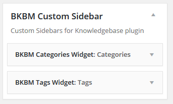

A. Quick Introduction? - top
Templify KB - Knowledge Base Addon
allows you to display Knowledge Base categories, tags and
single posts in custom templates without modifying any of the files inside theme forlder. Addon
automatically
handle
BWL Knowledge base categories, tags and single posts templates. Addon comes with responsive and mobile
friendly
grid layout.
So that you can easily display you're Knowledge Base contents in small devices.
Addone comes with built-in widget feature. You can add any custom widgets in sidebar areas only for the
KB
posts.
That means
you have the complete freedom to manage knowledge base page sidebar contents.
Addon has extensive option panel that allows you to customize page layout, search box settings,
breadcrumb
settings and many more.
You can display catgories and tags in 4 different style with 3 different page layout(Right sidebar/ Left
Sidebar/
Full Width). Also, you can enable/disable
any templates from option panel.
No matter which WordPress theme you're using, addon automatically sync it's layout with theme structure. You may need to add some custom stylesheet to adjust layout a little bit. That's why we added custom CSS panel to insert custom CSS code without changing theme/plugin original CSS code.
Checkout plugin outlook in WordPress site-
B. Installation: - top
You need to install BWL Knowledge Base Manager Plugin to use "Templify KB - Knowledge Base Addon". Minimum version 1.0.9 required.
- Steps:
- Go to plugins section in your wordpress admin panel and click
Add New
to install plugin.

- Now, upload the "bkbm-template-manager.zip" file.
- Once plugin successfully uploaded in your server you will get an message to activate it. Click on "Activate Plugin" Link and plugin will be ready to use.
- After activating plugins, you will redirect in plugins section of wp-admin panel and
show new installed plugins information in there.

C. How To Use? - top
- Once installation has been completed successfully, Addon automatically start handling Knowledge Base
categories, tags and
single post contents. Each templates has three type of layouts- Right sidebar, Left sidebar and Full
Width.
You
can set layouts from
option panel.


Addon Option panel: - top
How to set category/Tag Template Post Styling?
There are 4 types of styling (Rounded/Rectangular/Iconized/Simple) for display category and tag
items.
Go
to option panel
'Knowledge base page' section and select you're preferable style from the list.
-
To set Knowledge base home page URL in the breadcrumb, you need to set knowledge base Home page
slug.
To
get home
page slug go to 'Page' section in WordPress admin panel and click 'Quick Edit' and copy 'slug' value.
Use
this
slug value as
'Knowledge base Home Page Slug'.
Step: 01

Step: 02
Step: 03
Step: 04

Addon comes with widget feature. So that you can easily set custom widgets only for knowledge
base
category, tag and
single post templates. It's very easy to use like regular WordPress widget. Go to widgets section in
admin
panel
and you will a new
widget panel called 'BKBM Custom Sidebar'. Add you're preferable widgets in that new sidebar panel.
-

E. Translate Plugin. - top
"Templify KB" offers cool translation feature. So, you can easily add this plugin any kind of website. Check following steps for translate "Templify KB" plugin.
- Inside of Addon "lang" folder you will get a file named "en_EN.po" file. To edit this file you need to install "poedit" software in your computer.
- Our Addon text-domain is 'bkb_tpl'
- If you are doing "localization of a plugin" for the first time, then I recommend you to check this video. https://www.youtube.com/watch?v=aGN-hbMCPMg
- Suppose you want to translate plugin in to "German" language.
So,".po" file name will be "bkb_tpl-de_DE.po". That's all. - For country code check - https://www.gnu.org/savannah-checkouts/gnu/gettext/manual/html_node/Country-Codes.html#Country-Codes
- For Language code check - https://www.gnu.org/savannah-checkouts/gnu/gettext/manual/html_node/Usual-Language-Codes.html#Usual-Language-Codes
F. Upgrade Notes - top
Please take a backup before update all files and folder.
2024, December, 10 - v 1.1.7
- Replace all files and folders.
G. Change Log - top
2024, December, 10 - v 1.1.7
- Updated: Plugin for WordPress 6.7.1
- Updated: Plugin language/translation file.
- Updated: Addon documentation.
2024, July, 16 - v 1.1.6
- Updated: Addon code.
- Updated: Documentation File.
2023, March, 12 - v 1.1.5
- Updated: The title tag of a single KB post changed from h1 to h2.
- Updated: Documentation File.
2017, June, 18 - v 1.0.6
- Updated: Template Own CSS Style sheet Loading issue.
- Updated: Table of Content Layout.
- Updated: Documentation File.
2017, April, 18 - v 1.0.5
ADDED
Bootstrap compatibility option in option panel.
FIXED:
RTL issues for breadcrumb and KB post navigation.
IMPROVED:
Category/tag/single template files.
IMPROVED:
Addon performance.
UPDATED:
Language File.
UPDATED:
Documentation File.
2016, December, 31 - v 1.0.4
FIXED:
Template layout issue.
IMPROVED:
Addon performance.
UPDATED:
Language File.
UPDATED:
Documentation File.
2016, June, 07 - v 1.0.3
FIXED:
Multi-site notification issue.
IMPROVED:
Addon performance.
UPDATED:
Language File.
UPDATED:
Documentation File.
2015, April, 27 - v 1.0.2
- Added perfect responsive layout. Fxied issue for mobile device layout.
- Added option in option panel to set title font tag, size in single page.
- Added option in option panel to set margin in single/category/tag template.
- Fixed pagination layout in category/tag pages.
- Added option to set padding in template content & sidebar area from option panel.
IMPROVED:
Addon performance.
UPDATED:
Language File.
UPDATED:
Documentation File.
2015, November, 20 - v 1.0.1
- Added Enable/Disable Template Feature.
- Added Feature to user existing theme sidebars with custom KB template.
- Added Category/Topics Post Ordering Feature.
- Enable/Disable Template Stylesheet Feature.
IMPROVED:
Addon performance.
UPDATED:
Language File.
UPDATED:
Documentation File.
2015, June, 21 - v 1.0.0
- Initial release.
H. Credits - top
- Ideas & Coded By Mahbub Alam Khan
- BWL Knowledge Base Manager Plugin Plugin By bluewindlab
H. Conclusion: - top
Once again, thank you so much for purchasing Templify KB - Knowledge Base Addon.
Md. Mahbub Alam Khan